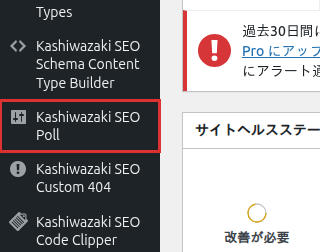

インストール・初期設定
プラグインのインストールから初期設定まで、ステップバイステップで解説します。
インストール手順
1
プラグインファイルを /wp-content/plugins/kashiwazaki-seo-poll/ にアップロード
2
WordPress管理画面「プラグイン」から有効化
3
左メニューに「アンケート」カスタム投稿タイプが追加される

4
管理画面サイドバーの「Kashiwazaki SEO Poll」→「基本設定」で初期設定を確認・変更する
有効化時にカスタム投稿タイプ「poll」と「dataset」が自動登録されます。パーマリンク設定を保存し直すことで、アンケートページのURLが正しく動作するようになります。
設定ページ
設定ページではアンケートの基本動作を設定できます。
カスタム投稿タイプ
| 投稿タイプ | 説明 |
|---|---|
| poll | アンケート（投票）の本体。質問文・選択肢・投票結果を管理 |
| dataset | アンケートデータのデータセット。CSV/XML/JSON/YAML形式で自動生成 |
構造化データ出力
本プラグインは以下の構造化データを自動出力します。
| 出力種類 | 説明 |
|---|---|
| Dataset JSON-LD | アンケートデータをDatasetスキーマとして構造化データ出力 |
| DC.type metaタグ | Dublin Coreメタデータとしてデータセットタイプを宣言 |
| BreadcrumbList JSON-LD | パンくずナビゲーションの構造化データ |
Rank Mathプラグインがインストールされている場合、Rank Mathとの連携が自動的に有効になります。
重複投票防止
投票の重複防止はIPアドレスとCookieの組み合わせで実現しています。
| 防止方法 | 説明 |
|---|---|
| IPアドレス | 同一IPからの重複投票を検出 |
| Cookie | ブラウザに投票済み情報を記録 |